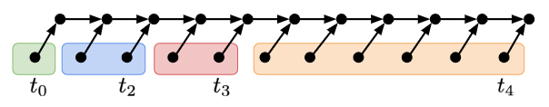

合併插入排序
Lester Ford, Jr. 以及 Selmer Johnson 把 Howard B. Demuth 的 1957 年博士論文裡面提到的 5 筆資料排序方法進行推廣，最終獲得一個用謹慎的方法試圖減少比較次數的排序方法──合併插入排序 Merge Insertion Sort 。
這個排序法的名字是高德納教授（Donald Knuth）在他撰寫的《The Art of Computer Programming》裡面取的。
附帶一提，最近 MIT 教授 Lex Fridman 釋出了一段與 Knuth 的訪談1 https://www.youtube.com/watch?v=2BdBfsXbST8 大家有興趣可以聽聽看。
如何避免大量的天花板
演算法的核心概念是這樣的：如果看到一個長度為 2 k − 1 2^k-1 2 k − 1 ⌈ log 2 ( ( 2 k − 1 ) + 1 ) ⌉ \ceil{\log_2 ((2^k-1)+1)} ⌈ log 2 ( ( 2 k − 1 ) + 1 ) ⌉ k k k
如果長度不到 2 k − 1 2^k-1 2 k − 1 盡量 做到了，最重要的想法可以透過下面這張圖來傳達：
假設我們能夠經過若干次比較之後，把所有元素的大小關係描述成上面這張圖。其中 x → y x\to y x → y x < y x < y x < y log 2 ( 7 + 1 ) = 3 \log_2(7+1) = 3 log 2 ( 7 + 1 ) = 3 log 2 ( 7 + 1 ) + log 2 ( 7 + 1 ) = 6 \log_2(7+1) + \log_2(7+1) = 6 log 2 ( 7 + 1 ) + log 2 ( 7 + 1 ) = 6 log 2 ( 7 + 1 ) + ⌈ log 2 ( 8 + 1 ) ⌉ = 7 \log_2(7+1) + \ceil{\log_2(8+1)} = 7 log 2 ( 7 + 1 ) + ⌈ log 2 ( 8 + 1 ) ⌉ = 7
行文至此，不難發現，如果我們有辦法把輸入資料的大小關係，表達成上圖這種牙刷形狀，再依照最不浪費比較次數的方式進行二分插入，說不定可以得到較佳（比較次數較小）的排序演算法。
合併插入排序的第一步
要怎麼生出牙刷呢？
首先，在分而治之的部分，我們先將資料隨意地兩兩分成一組，並且花費 ⌊ n / 2 ⌋ \floor{n/2} ⌊ n / 2 ⌋ ⌊ n / 2 ⌋ \floor{n/2} ⌊ n / 2 ⌋ b 1 , b 2 , … , b ⌈ n / 2 ⌉ b_1, b_2, \ldots, b_{\ceil{n/2}} b 1 , b 2 , … , b ⌈ n / 2 ⌉
我們現在來引用 Donald Knuth 《The Art of Computer Programming》裡面提到的分析技巧2

這些組別分起來，會長得像這樣：{ b 1 } \{b_1\} { b 1 } { b 2 , b 3 } \{b_2, b_3\} { b 2 , b 3 } { b 4 , b 5 } \{b_4, b_5\} { b 4 , b 5 } { b 6 , b 7 , b 8 , b 9 , b 1 0 , b 1 1 } \{b_6, b_7, b_8, b_9, b_{10}, b_{11}\} { b 6 , b 7 , b 8 , b 9 , b 1 0 , b 1 1 } t k t_k t k k k k t 0 t_0 t 0 t 2 t_2 t 2
要怎麼找出 t k t_k t k b t k b_{t_k} b t k t k − 1 t_{k-1} t k − 1 t k − 1 + 1 , … , t k t_{k-1}+1, \ldots, t_k t k − 1 + 1 , … , t k 2 t k − 1 + ( t k − t k − 1 − 1 ) = t k − 1 + t k − 1 2t_{k-1}+(t_k-t_{k-1}-1) = t_{k-1}+t_k-1 2 t k − 1 + ( t k − t k − 1 − 1 ) = t k − 1 + t k − 1 − 1 -1 − 1 b t k b_{t_k} b t k t k − 1 + t k − 1 = 2 k − 1 t_{k-1}+t_k-1 = 2^k-1 t k − 1 + t k − 1 = 2 k − 1 t k − 1 + t k = 2 k 。
t_{k-1} + t_k = 2^k\text{。}
t k − 1 + t k = 2 k 。 t k = 2 k − 2 k − 1 + 2 k − 2 − ⋯ + ( − 1 ) k 2 0 = ( 2 k + 1 + ( − 1 ) k ) / 3 .
\begin{aligned}
t_k &= 2^k - 2^{k-1} + 2^{k-2} - \cdots + (-1)^k2^0\\
&= (2^{k+1}+(-1)^k)/3.
\end{aligned}
t k = 2 k − 2 k − 1 + 2 k − 2 − ⋯ + ( − 1 ) k 2 0 = ( 2 k + 1 + ( − 1 ) k ) / 3 .
有了這個演算法以後，我們就可以利用遞迴方法來分析，這個合併插入排序需要的比較總次數了。我們令 F ( n ) F(n) F ( n ) n n n
F ( n ) = ⌊ n / 2 ⌋ + F ( ⌊ n / 2 ⌋ ) + G ( ⌈ n / 2 ⌉ )
F(n) = \floor{n/2} + F(\floor{n/2}) + G(\ceil{n/2})
F ( n ) = ⌊ n / 2 ⌋ + F ( ⌊ n / 2 ⌋ ) + G ( ⌈ n / 2 ⌉ )
其中，G ( ⌈ n / 2 ⌉ ) G(\ceil{n/2}) G ( ⌈ n / 2 ⌉ ) ⌈ n / 2 ⌉ \ceil{n/2} ⌈ n / 2 ⌉ b 1 , b 2 , … , b ⌈ n / 2 ⌉ b_1, b_2, \ldots, b_{\ceil{n/2}} b 1 , b 2 , … , b ⌈ n / 2 ⌉ { t i } \{t_i\} { t i } t k − 1 < ⌈ n / 2 ⌉ ≤ t k t_{k-1} < \ceil{n/2}\le t_k t k − 1 < ⌈ n / 2 ⌉ ≤ t k G ( ⌈ n / 2 ⌉ ) G(\ceil{n/2}) G ( ⌈ n / 2 ⌉ )
G ( ⌈ n / 2 ⌉ ) = ∑ i = 1 k − 1 i ( t i − t i − 1 ) + k ( ⌈ n / 2 ⌉ − t k − 1 ) = k ⌈ n / 2 ⌉ − ( t 0 + t 1 + ⋯ + t k − 1 )
\begin{aligned}
G(\ceil{n/2}) &= \sum_{i=1}^{k-1} i (t_i-t_{i-1}) + k(\ceil{n/2} - t_{k-1}) \\
&= k\ceil{n/2} - (t_0 + t_1 + \cdots + t_{k-1})
\end{aligned}
G ( ⌈ n / 2 ⌉ ) = i = 1 ∑ k − 1 i ( t i − t i − 1 ) + k ( ⌈ n / 2 ⌉ − t k − 1 ) = k ⌈ n / 2 ⌉ − ( t 0 + t 1 + ⋯ + t k − 1 )
令 w k = t 0 + t 1 + ⋯ + t k − 1 = ⌊ 2 k + 1 / 3 ⌋ w_k = t_0+t_1+\cdots + t_{k-1} = \floor{2^{k+1}/3} w k = t 0 + t 1 + ⋯ + t k − 1 = ⌊ 2 k + 1 / 3 ⌋
引理 22
F ( n ) − F ( n − 1 ) = k F(n) - F(n-1) = k F ( n ) − F ( n − 1 ) = k w k < n ≤ w k + 1 w_k < n \le w_{k+1} w k < n ≤ w k + 1
證明
我們可以用數學歸納法。Base Case 很顯然，所以就不寫了。Inductive Case 的部分可以利用 n n n n n n F ( n ) − F ( n − 1 ) = 1 + F ( n / 2 ) − F ( n / 2 − 1 ) F(n)-F(n-1) = 1+F(n/2)-F(n/2-1) F ( n ) − F ( n − 1 ) = 1 + F ( n / 2 ) − F ( n / 2 − 1 ) k − 1 k-1 k − 1 w k − 1 < ⌊ n / 2 ⌋ ≤ w k w_{k-1} < \floor{n/2} \le w_{k} w k − 1 < ⌊ n / 2 ⌋ ≤ w k w k w_k w k
w k − 1 < n / 2 ≤ w k （ n 是偶數。） ⟺ ⌊ 2 k / 3 ⌋ < n / 2 ≤ ⌊ 2 k + 1 / 3 ⌋ ⟺ 2 ⌊ 2 k / 3 ⌋ < n ≤ 2 ⌊ 2 k + 1 / 3 ⌋ ⟺ 2 ⌊ 2 k / 3 ⌋ + 1 < n ≤ 2 ⌊ 2 k + 1 / 3 ⌋ （ n 是偶數，這很重要。） ⟹ ⌊ 2 k + 1 / 3 ⌋ < n ≤ ⌊ 2 k + 2 / 3 ⌋
\begin{aligned}
&& w_{k-1} & < & n/2 & \le w_{k} & \text{（} n \text{ 是偶數。）}\\
&\Longleftrightarrow & \floor{2^{k}/3} & < & n/2 & \le \floor{2^{k+1}/3} \\
&\Longleftrightarrow & 2\floor{2^{k}/3} & < & n & \le 2\floor{2^{k+1}/3} \\
&\Longleftrightarrow & 2\floor{2^{k}/3}+1 & < & n & \le 2\floor{2^{k+1}/3} & \text{（} n \text{ 是偶數，這很重要。）} \\
&\Longrightarrow & \floor{2^{k+1}/3} & < & n & \le \floor{2^{k+2}/3} \\
\end{aligned}
⟺ ⟺ ⟺ ⟹ w k − 1 ⌊ 2 k / 3 ⌋ 2 ⌊ 2 k / 3 ⌋ 2 ⌊ 2 k / 3 ⌋ + 1 ⌊ 2 k + 1 / 3 ⌋ < < < < < n / 2 n / 2 n n n ≤ w k ≤ ⌊ 2 k + 1 / 3 ⌋ ≤ 2 ⌊ 2 k + 1 / 3 ⌋ ≤ 2 ⌊ 2 k + 1 / 3 ⌋ ≤ ⌊ 2 k + 2 / 3 ⌋ （ n 是偶數。） （ n 是偶數，這很重要。）
於是 n n n n n n
F ( n ) − F ( n − 1 ) = G ( ⌈ n / 2 ⌉ ) − G ( ⌈ ( n − 1 ) / 2 ⌉ )
F(n)-F(n-1) = G(\ceil{n/2})-G(\ceil{(n-1)/2})
F ( n ) − F ( n − 1 ) = G ( ⌈ n / 2 ⌉ ) − G ( ⌈ ( n − 1 ) / 2 ⌉ )
然後這個值是 k k k t k − 1 < ⌈ n / 2 ⌉ ≤ t k t_{k-1} < \ceil{n/2} \le t_k t k − 1 < ⌈ n / 2 ⌉ ≤ t k w k < n ≤ w k + 1 w_k < n\le w_{k+1} w k < n ≤ w k + 1
有了引理 22 以後，我們試圖找出 k k k n n n w k < n ≤ w k + 1 w_k < n \le w_{k+1} w k < n ≤ w k + 1 k k k ⌈ log 2 3 4 n ⌉ \ceil{\log_2 \frac{3}{4}n} ⌈ log 2 4 3 n ⌉
F ( n ) = ∑ i = 1 n ⌈ log 2 3 4 i ⌉ ≈ n log 2 n − 1 . 4 1 5 n + O ( log 2 n )
F(n) = \sum_{i=1}^n \ceil{\log_2 \frac{3}{4}i} \approx n\log_2 n - 1.415n + O(\log_2 n)
F ( n ) = i = 1 ∑ n ⌈ log 2 4 3 i ⌉ ≈ n log 2 n − 1 . 4 1 5 n + O ( log 2 n )
還記得二分插入法的上界、以及資訊理論下界嗎？我們把它們同步列出來：
A ( n ) = ⌈ log n ! ⌉ ≈ n log 2 n − 1 . 4 4 3 n + O ( log 2 n )
A(n) = \ceil{\log n!} \approx n\log_2 n - 1.443 n + O(\log_2 n)
A ( n ) = ⌈ log n ! ⌉ ≈ n log 2 n − 1 . 4 4 3 n + O ( log 2 n )
B ( n ) = ∑ i = 1 n ⌈ log i ⌉ ≈ n log 2 n − 0 . 9 1 5 n + O ( log 2 n )
B(n) = \sum_{i=1}^n \ceil{\log i} \approx n\log_2 n - 0.915 n + O(\log_2 n)
B ( n ) = i = 1 ∑ n ⌈ log i ⌉ ≈ n log 2 n − 0 . 9 1 5 n + O ( log 2 n )
不難發現 F ( n ) F(n) F ( n ) B ( n ) B(n) B ( n ) A ( n ) A(n) A ( n )
結論
後話就是，在 1979 年 Manacher3 5 存在無窮多個 n n n F ( n ) F(n) F ( n ) n = 1 8 9 n=189 n = 1 8 9 4 n n n n = 4 7 n=47 n = 4 7 6 n < 4 7 n<47 n < 4 7 n ≤ 4 6 n\le 46 n ≤ 4 6
然後 F ( n ) F(n) F ( n ) F ( n ) = n ⌈ log 2 3 4 n ⌉ + ⌊ 1 3 2 log 2 6 n ⌋ + ⌊ 1 2 log 2 6 n ⌋ 。
F(n) = n\ceil{\log_2 \frac{3}{4} n} + \floor{\frac13 2^{\log_2 6n}} + \floor{\frac12\log_2 6n}\text{。}
F ( n ) = n ⌈ log 2 4 3 n ⌉ + ⌊ 3 1 2 log 2 6 n ⌋ + ⌊ 2 1 log 2 6 n ⌋ 。
最後，大家要多多刷牙喔 ^_<。
推薦閱讀
1 . 感謝 a127 的告知與推薦！ ↩
2 . Donald Knuth, The Art of Computer Programming , Volumn 3, Page 183-187. ↩
3 . Glenn K. Manacher, The Ford-Johnson Sorting Algorithm Is Not Optimal , 1979. https://dl.acm.org/doi/pdf/10.1145/322139.322145 ↩
4 . T. D. Bui and Mai Thanh, Significant improvements to the Ford-Johnson algorithm for sorting , BIT 1985. https://link.springer.com/article/10.1007/BF01934989 ↩
5 . 交大黃光明教授與 S. Lin（我查不到…）當年在貝爾實驗室發表的論文：F. K. Hwang and S. Lin, A Simple Algorithm for Merging Two Disjoint Linearly Ordered Sets , SIAM Journal of Computation, 1972. https://epubs.siam.org/doi/abs/10.1137/0201004 ↩
6 . Marcin Peczarski, The Ford–Johnson algorithm still unbeaten for less than 47 elements , IPL 2007 February. https://www.sciencedirect.com/science/article/pii/S0020019006002742 ↩